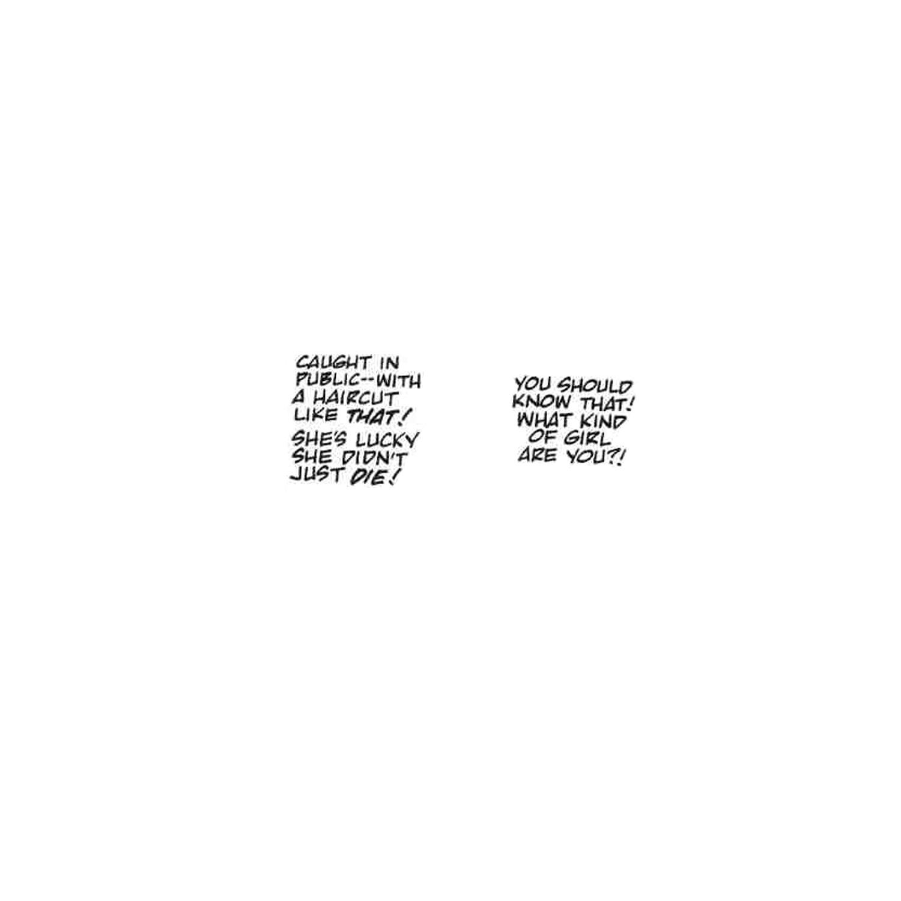
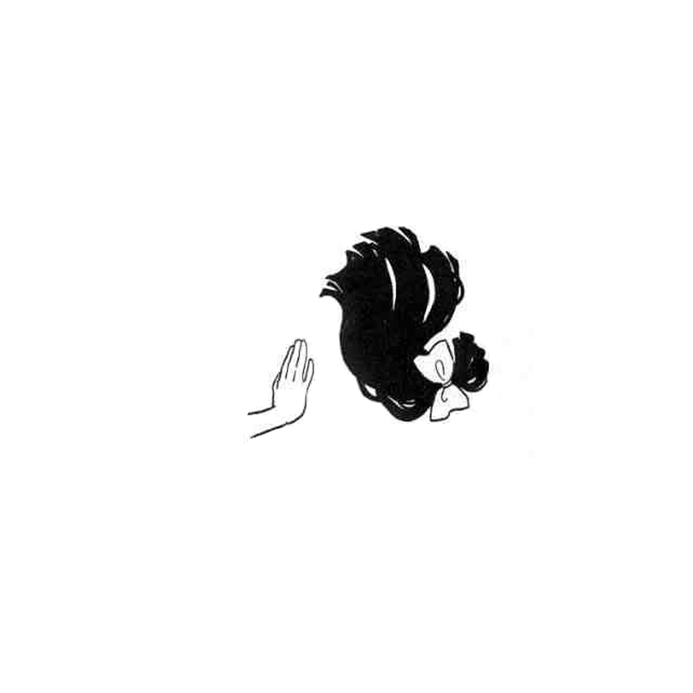
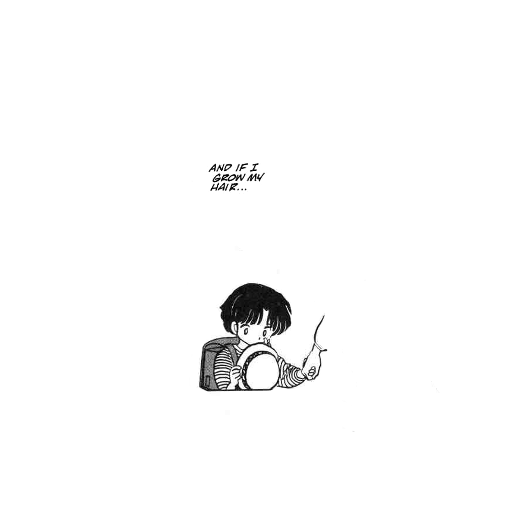

This lil' series uses imagery from Rumiko Takahashi’s Japanese manga Ranma ½ to explore my feelings about my hair.
Akane is a character in the manga who is particularly attached to her hair. She spends years growing it out to impress her love interest, thinking it will make her appear more feminine. Tragically, the bulk of it is chopped off in a freak martial-arts accident, one of the saddest moments in the manga.
Akane ultimately accepts her short bob, a style more true to herself that she preferred anyway. Her long hair is a simple metaphor for femininity, and its cut and her ultimate acceptance of it is a lesson in letting go of trying to be something you're not.
  This story resonated with me as a child because I've always felt insecure about my hair, its length and texture in particular. And as a black woman with relaxed hair, this story brought up the question of what exactly “hair that's true to yourself” and “being something you're not” really mean.
On a strictly formal level, I also find the drawings of hair in Ranma ½ to be exceptionally beautiful. Ironically, Takahashi's gorgeous, confident lines and busty, cute characters helped shape my idea of ideal feminine beauty, hair included.
(Read the story of Akane's chop at Manga Reader.)
Created March 2015.